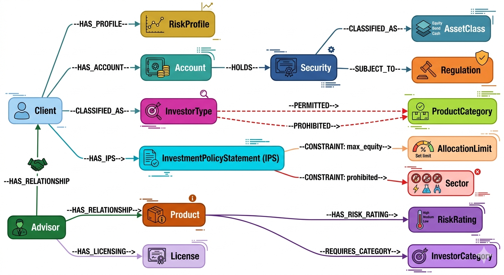

This is Part 4 of the RAG Enterprise Series. It assumes familiarity with the four RAG levels. Start with Part 1 if you haven't already.
Wealth management AI operates under a constraint that makes it uniquely hard: the system is simultaneously an analyst, a compliance officer, a tax advisor, and a relationship manager — but is legally constrained from acting as any of them without human oversight. Every retrieval decision has a fiduciary implication.
4. Domain 3 — Wealth Management Systems
4.1 Domain Characteristics and Challenges
Wealth management AI operates under the most severe fiduciary and regulatory constraints of any financial domain. The system is simultaneously an analyst, a compliance officer, a tax advisor, and a relationship manager — but is legally constrained from acting as any of them without human oversight.
Regulatory landscape:
- Canada: IIROC (now CIRO), OSC, OSFI, FATF (AML)
- US: FINRA, SEC Rule 15l-1 (Reg BI — Best Interest)
- EU: MiFID II (suitability, appropriateness)
- FATF: AML/KYC — beneficial ownership, PEP screening
Domain challenges:
| Challenge | Why It's Hard |
|---|---|
| Suitability reasoning | A recommendation must account for client risk profile, investment objectives, time horizon, tax situation, liquidity needs, and regulatory classification simultaneously |
| Real-time market data | Stale data creates regulatory exposure (MiFID II requires "best execution" based on current prices) |
| Cross-jurisdiction complexity | A client with Canadian, US, and UK accounts faces three regulatory regimes simultaneously |
| Document complexity | Prospectuses, offering memoranda, IPS documents are long, dense, and legally binding |
| Prohibited products | Certain products are prohibited for retail clients (structured notes with embedded leverage) regardless of client preference |
| Fair dealing | Recommendations must demonstrably not be driven by product margin (DSC fund ban in Canada) |
4.2 Level 1 — Vanilla RAG
Use case: Product knowledge base — "What is a GIC?", "How does a TFSA contribution room work?", "What is a dividend reinvestment plan?"
Implementation: Embed product brochures, regulatory fact sheets, knowledge articles → semantic search → FAQ response generation.
Real-world example: RBC's MyAdvisor chatbot handles basic product FAQs. TD's EasyWeb virtual assistant deflects tier-1 queries. These are all effectively L1.
What L1 handles well:
- Product education content (low-risk, no personalization needed)
- General tax-advantaged account explanations (RRSP, TFSA, FHSA)
- Process FAQs (how to transfer a RRSP, how to change beneficiaries)
Where L1 dangerously fails:
- "Should I put my RRSP contribution into Canadian equities or bonds given current market conditions?" — this is a suitability question. An L1 system that answers this without client profile context is making an unsuitable recommendation and is in regulatory violation.
- L1 has no mechanism to know it doesn't have enough context to answer.
4.3 Level 2 — Hybrid RAG
Use case: Investment research retrieval, earnings report analysis, portfolio news scanning.
Why hybrid matters for financial text:
- Analyst reports are dense with exact ticker symbols, CUSIP identifiers, financial ratios — BM25 is essential for exact-match on these
- But the semantic intent behind "show me bearish analyst coverage on Canadian bank stocks" requires dense retrieval
- Financial jargon evolves: "stealth tightening", "quantitative tightening", "soft landing" — dense vectors capture semantic drift better
Concrete example — Portfolio research assistant:
Query: "What are analysts saying about the rate sensitivity of Canadian bank NIM in 2025?"
Dense path: semantic similarity to "net interest margin rate sensitivity Canadian banks 2025"
→ retrieves analyst commentary, earnings call transcripts, sector reports
Sparse path: BM25 exact match on ["NIM", "net interest margin", "TD", "RY", "BNS", "BMO", "CM"]
→ retrieves reports with specific bank identifiers and exact financial metric names
Reranker: Cross-encoder scores and prioritizes docs that contain BOTH semantic context
AND exact bank ticker identifiers
Result: 5 analyst reports specifically discussing Canadian bank NIM in rate-sensitive scenarios
Real-world systems:
- Bloomberg Terminal BQNT — BQuant combines NLP semantic search with structured data exact queries
- FactSet Research Systems — hybrid retrieval over fundamental data + document corpus
- Refinitiv Eikon — semantic document search + exact financial identifier matching
- Morgan Stanley's AI @ Morgan Stanley (2023, OpenAI-powered) — assistant retrieves from 100k+ research reports using hybrid search
4.4 Level 3 — GraphRAG
Use case: Regulatory suitability assessment, conflict of interest screening, portfolio constraint compliance.
Wealth management ontology:

Query example — Suitability check:
"Is this 7-year autocallable note on an equity basket suitable for this client?"
Graph traversal:
1. Client → InvestorType: Retail (not accredited) → limits product universe
2. Product → [REQUIRES_CATEGORY: Accredited] → IMMEDIATELY PROHIBITED for retail
[If accredited: continue]
3. Product → RiskRating: High → Client RiskProfile: Conservative → MISMATCH
4. Client → IPS → [CONSTRAINT: max_alternative: 10%] → current alternatives allocation = 8%
5. Product → LiquidityRating: Illiquid (7-year lockup) → Client [LIQUIDITY_NEED: High] → MISMATCH
6. Product → [SUBJECT_TO: OSC Rule 45-106] → offering memorandum required
7. Synthesis: 2 hard stops (investor type + risk mismatch), 1 soft concern (liquidity)
8. Generate: Unsuitable — cannot recommend; document rationale for compliance record
Real-world examples:
- SuitabilityPro (Broadridge) — uses rule-based graph engines for suitability; moving toward graph + LLM hybrid
- Compliance.ai — regulatory change graph that maps regulatory updates to affected products and client segments
- Backstop Solutions (BlackRock) — portfolio constraint compliance using graph-based rule engines
4.5 Level 4 — Agentic RAG
Use case: Proactive portfolio review triggered by market events, tax-loss harvesting opportunity identification, next-best-action for advisors.
Example — IPS drift detection:
"Given Q3 market events, identify which of our high-net-worth clients have portfolios that have drifted beyond their IPS constraints and require rebalancing."
Agent loop:
Turn 1: Query market events Q3 2024 → identify major themes: rate cuts, CAD weakness, energy sector decline
Turn 2: Identify affected asset classes and sectors → Canadian equities (-4%), energy (-12%), REITs (+3%)
Turn 3: For each HNW client: retrieve portfolio holdings
Turn 4: For each client: retrieve IPS constraints (max equity %, sector exclusions, benchmark)
Turn 5: Calculate current allocation vs. IPS target for each client
Turn 6: Reflect: Which clients exceed tolerance bands (typically ±5% from target)?
Turn 7: For flagged clients: retrieve rebalancing options within IPS constraints
Turn 8: Rank by urgency and tax impact (RRSP vs. non-registered rebalancing has different tax treatment)
Turn 9: Generate advisor briefing: client list + drift magnitude + recommended trades + tax impact estimate
Real-world systems:
- Morgan Stanley Next Best Action (NBA) — advisor-facing LLM that surfaces proactive client opportunities
- Salesforce Einstein for Wealth Management — CRM + portfolio data agentic retrieval
- RBC's Aiden (internal) — AI model used for client segmentation and advisor recommendations
- Vanguard's Personal Advisor Services — semi-agentic portfolio review and rebalancing triggers
4.6 Supporting Elements — Wealth Management Domain
Memory:
Client relationship memory:
- Investment policy statement (IPS) — evolves over time; version history matters
- Life event flags (retirement approaching, inheritance received, divorce)
- Communication preferences and meeting history
- Prior recommendations made and client responses
Market context memory:
- Rolling 90-day market event log
- Active regulatory changes affecting product universe
- Interest rate and currency regime context
Compliance memory:
- Rationale log for every recommendation (audit trail — regulatory requirement)
- Suitability assessment history per product per client
- Complaints and dispute records
Prompt Engineering:
Fiduciary system prompt:
"You are a portfolio analytics assistant supporting a registered investment advisor.
You do not give investment advice directly to clients. You support advisor decision-making.
Client profile: [INJECT_CLIENT_SUMMARY]
IPS constraints: [INJECT_IPS]
Current portfolio: [INJECT_HOLDINGS_SNAPSHOT with TIMESTAMP]
Regulatory context: [INJECT_ACTIVE_REGULATIONS for client.jurisdiction]
Required: Always distinguish between (a) factual portfolio analysis and (b) forward-looking recommendations.
Required: Every recommendation must cite IPS section and regulatory basis.
Required: Flag any recommendation requiring compliance pre-approval."
Constraint-awareness prompting:
"Before answering, identify: What does this client's IPS prohibit? What investor category are they?
What is their stated risk tolerance? Answer only within those guardrails."
Fine-Tuning:
- FinBERT: Pre-trained on financial news, SEC filings, earnings transcripts — better semantic alignment for financial text
- Instruction fine-tuning on earnings Q&A: Teach the model to extract net interest margin, CET1 ratio, efficiency ratio from dense earnings transcripts without confusing similar metrics
- Compliance fine-tuning: Train the model on thousands of suitability determination examples so it learns the decision boundary (suitable vs. unsuitable) with high precision
- Tool: Unsloth + LoRA on LLaMA-3 base; domain-adapted FinBERT as the embedding backbone
Part of the RAG Enterprise Series. Next: RAG in Personal Banking — Scale, AML, and Transaction Intelligence.